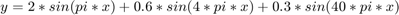
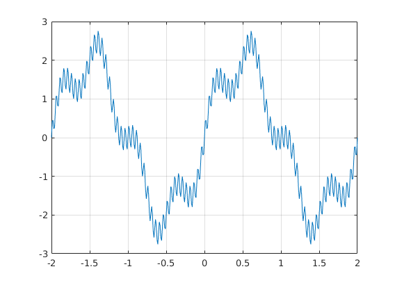
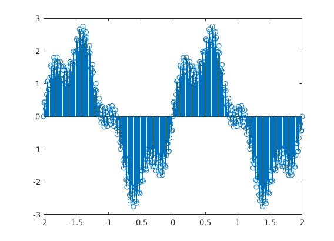
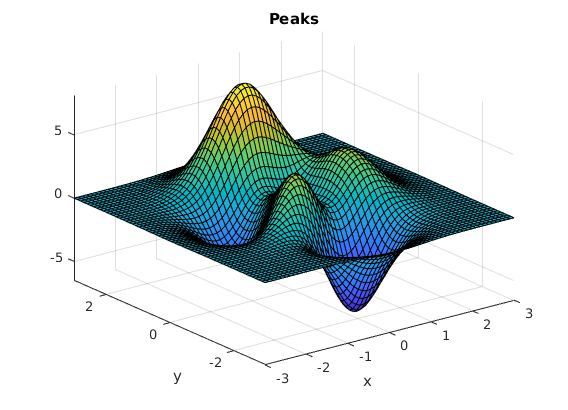

Adding sine waves
The following is a demonstration of adding sine wave in Matlab and uses the plot function to display the result
The final function should resemble:

Contents
Define the timeline
%x = -2 * pi : 0.001 : 2 * pi;
x = -2 : 0.01 : 2 ;
Define some component sine waves
y1 = 2.0 * sin(pi*x); y2 = 0.6 * sin(pi*4*x); y3 = 0.3 * sin(pi*40*x);
Sum the sines
y= y1 + y2 + y3;
figure
plot(x, y)
grid on
 Using stem plot
The stem function allows you to plot the discrete values.
figure stem(x,y)
3D Plots
The peaks function creates a 3D mesh plot of the following function:

figure peaks(60)
z = 3*(1-x).^2.*exp(-(x.^2) - (y+1).^2) ... - 10*(x/5 - x.^3 - y.^5).*exp(-x.^2-y.^2) ... - 1/3*exp(-(x+1).^2 - y.^2)